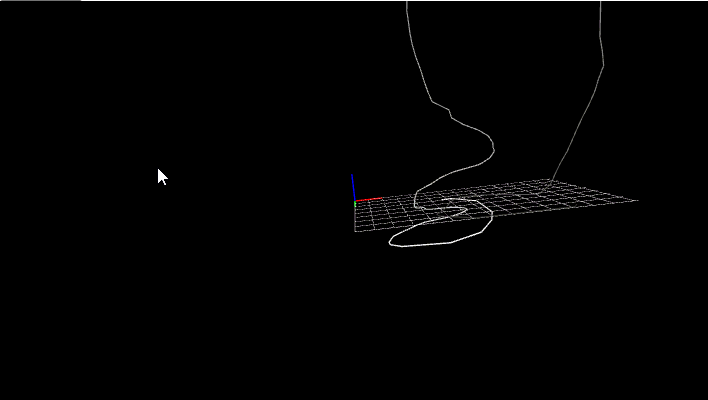
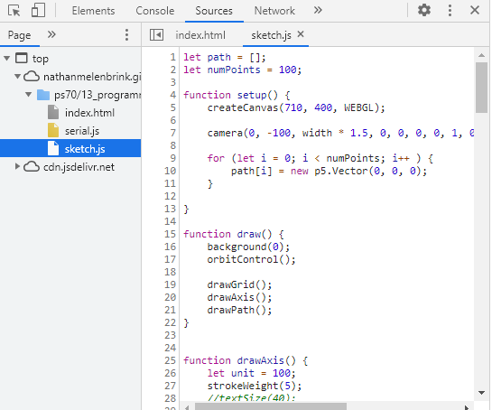

### WebSerial
Demos:
- <a href='./p5-webserial/index.html'>Streaming integers</a>
- <a href='./p5-webserial/index_3D.html'>3D drawing environment</a>
- <a href='./p5-webserial/index_play.html'>Breakout game</a>

For this tutorial, you'll need the following:
<ul>
<li>Microcontroller </li>
<li>breadboard</li>
<li>hookup wires </li>
<li>potentiometer or other analog input </li>
</ul>
The Arduino code is pretty straightforward. We'll start with the AnalogReadSerial example, but modify it slightly so that we can plug a potentiometer into A0, A2, and A4.
<pre><code class="language-arduino">
void setup() {
// initialize serial communication at 9600 bits per second:
Serial.begin(9600);
pinMode(A0, OUTPUT);
pinMode(A4, OUTPUT);
digitalWrite(A0, HIGH);
digitalWrite(A4, LOW);
}
// the loop routine runs over and over again forever:
void loop() {
// read the input on analog pin 0:
int sensorValue = analogRead(A2);
// print out the value you read:
Serial.println(sensorValue);
delay(1); // delay in between reads for stability
}
</code></pre>
The javascript side is a little more complicated. We'll want to make a folder that contains an `index.html` file and a `serial.js` file. The `index.html` file should look like this:
<pre><code class="html">
<!doctype html>
<html class="no-js" lang="en">
<head>
<meta charset="UTF-8">
<script language="javascript" type="text/javascript" src="serial.js"> </script>
</head>
<body>
<div class="connect-container">
<button id="connect-button">Connect</button>
<span id="current-value"></span>
</div>
</body>
</html>
</code></pre>
We can also create a `sketch.js` file, which we'll use later. Use the browser Inspect tool to see the contents of the demo file (click the "Sources" panel).

You should now be able to see the AnalogRead value being streamed to the browser window.
Next, we can use p5 to make a more interesting demonstration. See the page on <a href='../../lab/programming/p5.html'>Processing and p5</a> if you've not done so already.